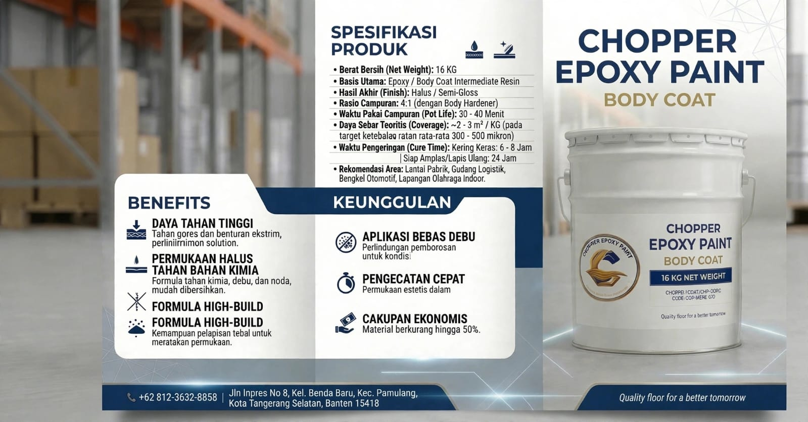
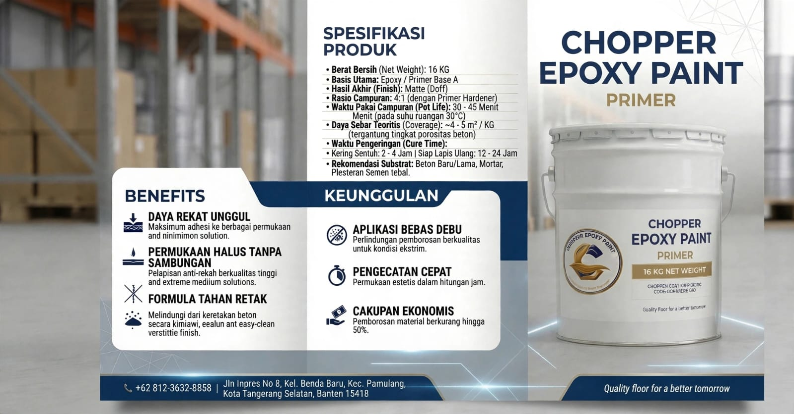
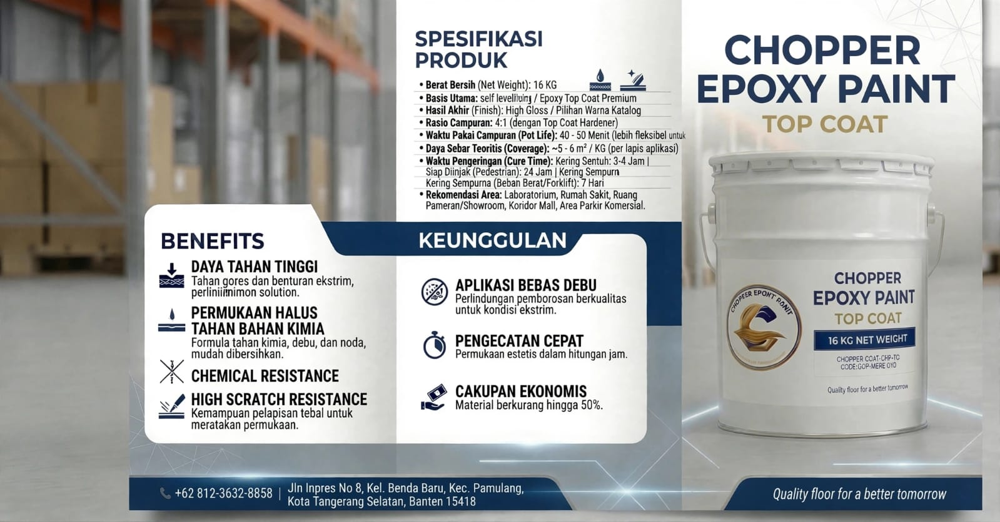

Menjadi produsen cat epoxy dan kontraktor aplikator lantai terdepan di Indonesia yang terpercaya dalam kualitas material, ketepatan waktu, serta inovasi teknologi pelapisan lantai.
Spesialis Epoxy Lantai Profesional untuk Gudang, Pabrik, Parkir, Rumah Sakit, Sekolah & Kantor. Quality floor for a better tomorrow.
📅 Minta Survei Gratis Lihat ProdukChopper Epoxy Paint Indonesia — Spesialis Jasa & Produsen Cat Epoxy Lantai.
Chopper Epoxy Paint Indonesia adalah perusahaan yang bergerak di bidang produksi material cat epoxy lantai sekaligus kontraktor jasa aplikator epoxy profesional di seluruh Indonesia. Berbasis di Tangerang Selatan, kami menyediakan solusi pelapisan lantai (floor coating) berstandar industri dengan ketebalan terukur mulai dari 500 Micron hingga 3000 Micron.
Didukung tenaga aplikator berpengalaman, mesin grinding & vacuum debu industri, serta kontrol mutu bahan baku yang ketat, kami memastikan setiap proyek gudang, pabrik, rumah sakit, area parkir, hingga fasilitas komersial memiliki lantai yang kuat, higienis, dan bergaransi.
Menjadi produsen cat epoxy dan kontraktor aplikator lantai terdepan di Indonesia yang terpercaya dalam kualitas material, ketepatan waktu, serta inovasi teknologi pelapisan lantai.
Proses kerja terstruktur sesuai SOP standar industri untuk hasil maksimal.
Pengukuran luas area, pengecekan keretakan, dan pengukuran kelembapan beton sebelum pengerjaan dimulai.
Pengupasan permukaan lantai menggunakan mesin diamond grinding untuk membuka pori beton dan menyedot debu hingga bersih.
Pelapisan cat dasar agar meresap ke pori beton dan menciptakan daya ikat kuat dengan lapisan berikutnya.
Penambalan lubang, retakan rambut, dan sambungan beton (joint) menggunakan dempul epoxy agar permukaan rata.
Penuangan dan perataan lapisan tengah untuk membentuk ketebalan sesuai spesifikasi (500–3000 Micron) dan menahan beban berat.
Pelapisan akhir (finishing) mengkilap dan tahan gores, dilanjutkan inspeksi kualitas (QC) serta serah terima garansi.
Klik tombol pesan pada layanan yang dibutuhkan untuk langsung terhubung ke WhatsApp.
Tahan beban berat, forklift, anti debu & mudah dibersihkan.
📲 Pesan Layanan IniAnti slip, marking garis jelas, tahan air & awet.
📲 Pesan Layanan IniHigienis, anti bakteri, warna cerah & aman.
📲 Pesan Layanan IniRapi, mengkilap, nyaman dilihat & tahan lama.
📲 Pesan Layanan IniDesain sesuai permintaan, untuk showroom & toko.
📲 Pesan Layanan IniLantai lama rusak? Kami perbaiki jadi seperti baru.
📲 Pesan Layanan IniSistem pelapisan cat epoxy asli Chopper — kualitas pabrik, harga langsung distributor.



Isi formulir, klik kirim, langsung masuk ke WhatsApp kami.